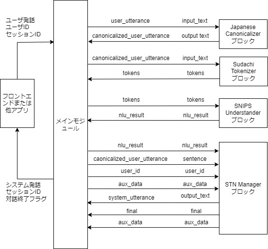
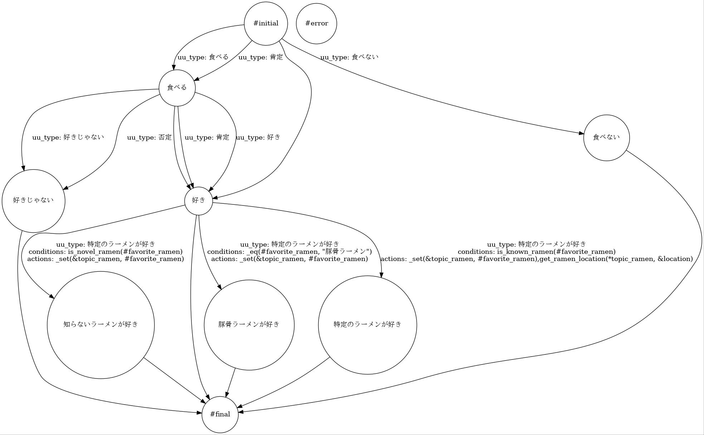

4. 日本語サンプルアプリケーションの説明
本節では，日本語サンプルアプリケーションを通して，DialBBアプリケーションの構成を説明します．
4.1. システム構成
本アプリケーションは以下のようなシステム構成をしています．

本アプリケーションでは，以下のつの組み込みブロックを利用しています． なお，組み込みブロックとは，DialBBにあらかじめ含まれているブロックです．これらの組み込みブロックの詳細は，「組み込みブロッククラスの仕様」で説明します．
Japanese Canonicalizer: ユーザ入力文の正規化（大文字→小文字，全角→半角の変換，Unicode正規化など）を行います．
Sudachi Tokenizer: 正規化されたユーザ入力文を単語に分割します．形態素解析器Sudachiを用います．
SNIPS Understander: 言語理解を行います．SNIPS_NLUを利用して，ユーザ発話タイプ（インテントとも呼びます）の決定とスロットの抽出を行います．
STN Manager: 対話管理と言語生成を行います．状態遷移ネットワーク(State Transition Network)を用いて対話管理を行い，システム発話を出力します．
メインモジュールとブロックを結ぶ矢印の上の記号は，左側がメインモジュールのblackboardにおけるキーで，右側がブロックの入出力におけるキーです．
4.2. アプリケーションを構成するファイル
本アプリケーションを構成するファイルはsample_apps/network_jaディレクトリ（フォルダ）にあります．ここにあるファイルを変更することで，どのようにすればアプリケーションを変更することができるかを知ることができます．ファイルを大幅に変更すれば全く異なる対話システムも作ることができます．
sample_apps/network_jaには以下のファイルが含まれています．
config.ymlアプリケーションを規定するコンフィギュレーションファイルです．どのようなブロックを使うかや，各ブロックが読み込むファイルなどが指定されています．このファイルのフォーマットは「コンフィギュレーション」で詳細に説明します
config_gs_template.ymlSNIPS UnderstanderブロックとSTN Manageブロックで用いる知識をExcelではなく，Google Spreadsheetを用いる場合のコンフィギュレーションファイルのテンプレートです．これをコピーし，Google Spreadsheetにアクセスするための情報を加えることで使用できます．
sample-knowledge-ja.xlsxSNIPS UndderstanderブロックとSTN Managerブロックで用いる知識を記述したものです．
scenario_functions.pySTN Managerブロックで用いるプログラムです．
dictionary_functions.pySNIPS Undderstander用の辞書をExcel記述ではなく，関数によって定義する場合の例が含まれています．
test_inputs.txtシステムテストで使うテストシナリオです．
4.3. SNIPS Understanderブロック
4.3.1. 言語理解結果
SNIPS Understanderブロックは，入力発話を解析し，言語理解結果を出力します． 言語理解結果はタイプとスロットの集合からなります．
例えば，「好きなのは醤油」の言語理解結果は次のようになります．
{"type": "特定のラーメンが好き", "slots": {"favarite_ramen": "醤油ラーメン"}}
"特定のラーメンが好き"がタイプで，"favarite_ramen"スロットの値が"醤油ラーメン"です．複数のスロットを持つような発話もあり得ます．
4.3.2. 言語理解知識
SNIPS Understanderブロックが用いる言語理解用の知識は，sample-knowledge-ja.xlsxに書かれています．
言語理解知識は，以下の４つのシートからなります．
シート名 |
内容 |
|---|---|
utterances |
タイプ毎の発話例 |
slots |
スロットとエンティティの関係 |
entities |
エンティティに関する情報 |
dictionary |
エンティティ毎の辞書エントリーと同義語 |
これらの詳細は「言語理解知識」を参照してください．
4.3.3. SNIPS用の訓練データ
アプリを立ち上げると上記の知識はSNIPS用の訓練データに変換され，モデルが作られます．
SNIPS用の訓練データはアプリのディレクトリの_training_data.jsonです．このファイルを見ることで，うまく変換されているかどうかを確認できます．
4.4. STN Managerブロック
対話管理知識（シナリオ）は，sample-knowledge-ja.xlsxファイルのscenarioシートです．
このシートの書き方の詳細は「対話管理の知識記述」を参照してください．
Graphvizがインストールされていれば，アプリケーションを起動したとき，シナリオファイルから生成した状態遷移ネットワークの画像ファイルを出力します．以下が本アプリケーションの状態遷移ネットワークです．

シナリオファイルで用いている遷移の条件や遷移後に実行する関数のうち，組み込み関数でないものが
scenario_functions.pyで定義されています．